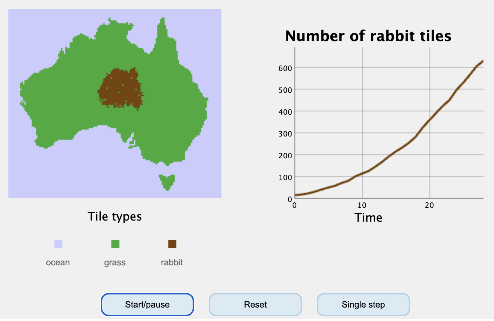

{kind=link}
{kind=link}
{kind=link}
```{r}
#| label: fig-growth
#| fig-cap: "Logistic growth for three values of $r$."
#| fig-width: 6
#| fig-height: 3.2
t <- 0:40
logistic <- function(r, K = 100, N0 = 2) {
N <- numeric(length(t)); N[1] <- N0
for (i in 2:length(t)) N[i] <- N[i-1] + r * N[i-1] * (1 - N[i-1]/K)
N
}
plot(t, logistic(0.10), type = "l", lwd = 2, ylim = c(0, 110),
xlab = "time", ylab = "N")
lines(t, logistic(0.20), lwd = 2, lty = 2)
lines(t, logistic(0.35), lwd = 2, lty = 3)
legend("bottomright", c("r = 0.10", "r = 0.20", "r = 0.35"), lty = 1:3, lwd = 2)
```Print book 🖨️
This page serves the whole book in one document, so that a single call of ‘print’ gives you everything rather than one chapter at a time. Nothing here is a second copy: the chapters are pulled straight from the same sources as the chapter pages, so this page cannot fall behind them. There’s a few hacks additional hacks I applied (deleted the search-bar icon, moved the footnotes to not all be cluttered at the end, small changes like this). Just make sure to update the chapter list on this page, and the print should follow along just fine.
Pick a layout and the print dialog opens:
One column is the readable default: full-width text, and the side-by-side figure panels stay side by side. See left-hand side of image below.
Two columns fits noticeably more text on a sheet, which is worth real money if students pay to print it. The type comes down a little with the measure, and the side-by-side panels stack rather than squeeze into half a column. Wide code blocks and long equations are the things to check before committing to it. See right-hand side of image below.
Either way the book opens on a cover page and every chapter starts on a fresh sheet. Pressing Cmd/Ctrl+P without using a button gives you the one-column version.
Welcome
This is a practical guide for teachers at Utrecht University who want to offer students a course website along with their usual course book. For this, we can use Quarto, which generates a interactive and easy-to-navigate website, that is also printer-friendly. That means students can choose to read it on their screen, print it, and with very little extra effort, you can combine all this into an actual course book!
Here, I explain how to do all this by using Quarto in RStudio. However, Quarto itself is a broader framework: it works just as happily from Jupyter notebooks or VS Code, and with Python or Julia instead of R. We describe the RStudio route because, within the Biology department I work in, that is the environment most colleagues already have open.
What you end up with
Two course books in the Biology department have been built exactly this way, and everything in this guide is drawn from their source:
- Biologische Modellen en Statistiek: a full Dutch-language course book with interactive statistics applets, shared LaTeX macros, and a printable PDF from the same source.
- Modeling Life: an English course website with embedded simulations and mini-projects.
What this explainer covers
- Getting started: installing stuff, making the project, and the one configuration file that decides everything.
- Writing: text, maths, code that runs, callouts, exercises, figures, and getting a decent PDF out of the same source.
- Interactive material: embedding simulations, code your students can edit and run in the browser, and self-contained applets. This is the part students love and tell you about in course evaluations (Caracal), so this makes a Quarto book worth the extra effort.
- Building and publishing: rendering the book and putting it online via Github pages.
Starting from scratch or from a template
You can either start from scratch, or start from a template. This explainer is itself also a starter book: every chapter is a working demonstration of the thing it describes, so copying it yields you the UU house style, a working _quarto.yml, an example live applet, how to use figures, and an example of every pattern you are likely to need.
Download the starter book (.zip) — then see Option A: start from this book for how to open it in RStudio.
What Quarto is, and why bother
Quarto is a free, open-source publishing system. You write in plain text — .qmd files, which use Markdown syntax: # and ## indicate chapter and section headings, text between one or two asterisks (*) is italic/bold respectively, etc. Quarto can render this into a website or a PDF.
Why it suits teaching
Less worry about formatting, more focus on content Your book is a folder of plain text files. This enables you to think more freely about the content, rather than worry about formatting. Quarto takes care of 90% of the formatting (I will not lie, sometimes you will still need to tweak a bit if you’re a prefectionist).
Maths renders properly. You can use LaTeX to format all your math by putting text between dollar signs. It prints beautifully, and students can copy/paste either the image or the LateX code easily.
Code can run. A plot in your reader can be generated by the code that produced it, so the figure and the analysis never drift apart.
Interactive explainers right next to the explanation. A student can read about the material, model and immediately turn some knobs (see section Embedding interactive content). In fact, with Code students can run in the browser they can edit the R or Python code and run it locally in the browser, even if they have no R or Python installed.
Navigational structure comes for free. Sidebar, search box, chapter numbering, cross-references and a table of contents are all generated for you.
What you need to install
As said, we will go the Rstudio route here. Three things you need to install, in this order.
- R: the programming language itself.
- RStudio Desktop: the editor. RStudio v2022.07 and later have built-in Quarto support.
- Quarto (sometimes optional)
Recent RStudio versions ship with a copy of Quarto bundled, so step 3 is sometimes optional. But perhaps always good to jot down which version of Quarto you have.
NoteWhich version am I on?
In RStudio: Tools → Terminal → New Terminal, then type quarto --version. This is one of the few times in this guide you need a terminal, and you can skip it if you would rather not. But let’s be honest, we all like to feel like a hacker every now and then =)
Document, website, or book?
The most important file, _quarto.yml, decides what you are building.
type: |
What you get | Good for |
|---|---|---|
default |
A single standalone document | A single web-page for a practical or lecture |
website |
Many pages with a top navigation bar | A course site: schedule, links, materials |
book |
Numbered chapters, a sidebar, cross-references, and a combined PDF | A course reader |
A book is a website with extra structure, so starting as a website and graduating to a book later costs almost nothing. This guide assumes a book.
Not an R user?
Almost nothing here is really about R. Write ```{python} instead of ```{r} and your code chunks run Python; Julia and Observable JS work too, and a book can mix them. However, I have no experience using Quarto with Python or other languages, so I cannot give you any advice on that. It’s probably just as easy. Either way, the structure, the figures, the callouts, the iframes, the publishing, this is all identical whether you edit in RStudio, VS Code, or a plain text editor.
Let’s get started!
Setting up in RStudio
Duration: ten minutes, once. At the end you will have a real book rendering in front of you.
There are two ways in, and the second is usually the better one.
Option A: start from this book
The book you are reading is itself a starter template. Every chapter in this guide is a working demonstration of the thing it describes. Download and extract the folder below and you inherit all of it: the UU house style, a working _quarto.yml, a sensible .gitignore1, and an example of each pattern you are likely to need.
Opening a downloaded folder in RStudio
Unzip it somewhere sensible and rename the folder to your course.
In RStudio: File → New Project… → Existing Directory → browse to that folder → Create Project.
Existing Directory is the option people miss, because the wizard’s first screen pushes you towards New Directory. It creates nothing of its own. It only tells RStudio “this folder is a project”, writes an
.Rprojfile into it, and opens it. Everything already in the folder stays exactly as it is. (The zip deliberately contains no.Rproj, so the one RStudio makes will be named after your folder.)Render your book (see Press Render below). You should get exactly this web book back, running locally. Nothing else needs installing.
Now start replacing. Open
_quarto.yml, change the title and author, and work through the chapters one at a time: keep the scaffolding, delete our prose, write yours.
NoteWhat to keep, what to throw away
Keep: _quarto.yml (although you’ll edit the actual chapters), uu.scss (uu house style), .gitignore, and folder structure (e.g. figures/ and applets/).
Throw away once you no longer need them: the specific chapter files for this book, and apps/figures only used for this explainer. You can also throw away the make-starter-zip.R, which was used to package this template.
Option B: start from scratch
If you would rather setup your book from an empty folder, which will help you better understand how it works, you can start one from scratch with RStudio.
Make the project
File → New Project… → New Directory → Quarto Book.
Give the folder a name. Tick Create a git repository if you already know you want to publish it (see Putting it online): it is easier to tick now than to add later. Press Create.
RStudio opens the new project, and you are already looking at a working book.
Press Render
The Render button sits in the toolbar above the editor. The first render takes a few minutes (depending on the book size); the finished book then appears either in the RStudio’s Viewer pane or in your web browser (system dependent). All the HTML files are moved to a folder called _book (or later: docs — see Almost everything is controlled by one file: _quarto.yml). Note that you can open the HTML files in this directory from your file browser, and everything will work with one exception: the live code chunks, which either requires a local webserver (by typing quarto preview in the terminal), or simply an online copy of your book (see Putting it online).
If you use quarto preview to show your web book in the browser, there is a neat little tick-box left of the Render button called Render on Save. Now every save refreshes the preview by itself.
Source or Visual?
Note that the toolbar with the render button also contains a Source/Visual toggle.
Visual gives you a Word-like view: real bold text, real tables, menus for inserting figures, equations and cross-references. If you dont want to see any markup at all, you can live here permanently.
Source shows the markup. It is faster once you know it, and it is what the rest of this guide shows. I do recommend this, with one exception, shown in the tip below.
TipMake tables in Visual mode
Markdown tables are miserable to write by hand and trivial in Visual mode. Insert one there, then switch back to Source. Or ask AI to convert a table into markdown2.
Important elements in a Quarto book folder
| Item | What it is |
|---|---|
_quarto.yml |
The book definition: which chapters, in which order, with which theme. The only file you truly must understand (see Almost everything is controlled by one file: _quarto.yml). |
index.qmd |
The front page. You cannot rename this file, it is required and it is the ‘home page’ of your web book. |
*.qmd |
One file per chapter. This is where you write. You can enable / disable chapters by modifying _quarto.yml. |
_book/ |
The finished website, generated by Quarto upon rendering. Don’t edit these files, they will be overwritten next render anyway. |
*.Rproj |
RStudio’s project file. Double-click it to reopen the book later. |
_freeze/ |
Stored results of code that has already been run or rendered, helps speed up rendering later (see Rendering, and keeping it fast). |
Almost everything is controlled by one file: _quarto.yml
This one file is the table of contents, the theme, and the settings. It is probably good to go through this step by step. Although the rest of working with Quarto is just writing, you need to know a little bit about this file. That being said, if you end up using my template, you mostly need to modify the chapter organisation. If you want to use your own style, you can change the theme and add your own SCSS.
A minimal book
project:
type: book
output-dir: docs # where the finished website is written
book:
title: "My Course Book"
author: "Your Name, Utrecht University"
chapters:
- index.qmd # the front page
- part: "Getting started" # groups chapters under a heading
chapters:
- 01-writing.qmd
- 02-figures.qmd
- part: "Practicals"
chapters:
- 03-practical.qmd
appendices: # lettered instead of numbered
- answers.qmd
format:
html:
theme: cosmo # one of the default Quarto themes
toc: true
pdf:
documentclass: scrreprt # delete if you never want a PDFThree blocks matter most:
project— what you are building, and where the output goes.book— the structure, and which chapters in which order.format— how each output type looks.
The side bar
Your book will render each chapter with a navigation sidebar, like the one you can see to the left right now. Note that a very long chapter title makes an ugly sidebar entry. In fact, this specific chapter has a very long title. Fortunately, you can give the sidebar its own shorter text, which was done for this chapter:
chapters:
- text: "Quarto yml"
href: 03-quarto-yml.qmdChapters can also be placed in subfolders, organising your websites into bigger chunks of chapters (e.g. part 1 and part 2 of a course).
Indentation
The _quarto.yml file is very strict about indentation, everything must be spaces, never tabs. If Quarto complains about the file and the message makes no sense, indentation in this file is often the culprit.
CSS / UU house style
You can modify how your book looks by changing the style sheets. Some that ship with Quarto are cosmo, flatlyand litera (all read well as a textbook). If you are familiar with CSS stylesheet, you can layer that on top:
format:
html:
theme: [cosmo, uu.scss]That is what this book uses. Quarto will also happily use a light/dark pair:
theme:
light: [cosmo, uu.scss]
dark: [darkly, uu-dark.scss]The theme listed as the first is the default, and the reader’s choice is remembered in their browser. Add respect-user-color-scheme: true and it follows their operating system settings instead.
NoteWhy this book has no dark mode
The UU identity is specified on a white ground, and has no dark mode counter part. So I decided not to add it. You can do it for your own book, of course, as we have done for many of ours (see Figure 3.1).
Other options in the yaml
The yaml has many other options. Without listing all of them, you can look into these:
book:
favicon: figures/favicon.png # the little (20x20) icon next to the web address
search: true # search function enabled, really useful for students
sidebar: # menu to the left
logo: figures/uu-logo.png # logo's for your course / UU branding
style: floating # other option: 'docked'
collapse-level: 1 # how many levels of headings are collapsed (1=all)
pinned: true # stays visible when scrolling down
page-footer:
left: "Utrecht University"
right: "Quarto 4 UU"
format:
html:
toc-location: right # paragraph menu to the right of web page
lightbox: true # click figures to enlarge it
code-overflow: wrap # wrap code that contain too many characters
link-external-newwindow: true # external links are always opening in a new windowThe official UU logo files are on the corporate identity site; download the right variant rather than taking one off a random website.
Writing a chapter
A .qmd file is written in Markdown (q=quarto, md=markdown). That means you can write in plain text with a few marks for emphasis. It is extended with additional options: maths, raw html, (runnable) code that is easy to copy/paste, and cross-references. This page discusses some basics.
Text and headings
**bold**, *italic*, `code`, [link text](url). A blank line starts a new paragraph.
One # is the chapter title, ## a section, ### a subsection. They get automatically numbered based on where they appear in the book. The sections (##) are headings are what fill the table of contents on the right-hand side of every page, so they are worth naming well.
Add {.unnumbered} directly after a heading to keep a page out of the chapter numbering. This is useful for a preface, a schedule, or a links page.
Maths
Inline between single dollar signs: $f(x) = x^3 + \alpha x gives \(f(x) = x^3 + \alpha x\). You can also put maths between double dollar signs, with a label so you can refer to it later:
$$
\frac{\mathrm{d}N}{\mathrm{d}t} = rN\left(1 - \frac{N}{K}\right)
$$ {#eq-logistic}\[ \frac{\mathrm{d}N}{\mathrm{d}t} = rN\left(1 - \frac{N}{K}\right) \tag{4.1}\]
Writing @eq-logistic anywhere in the book now produces a numbered, clickable reference: Equation 4.1.
If you’re familiar with LateX, I’m sure you’ll find your way with this stuff.
Code that produces a figure
A chunk in R markdown always starts with three backticks (```) followed by the programming language for that chunk. Chunk options go one per line at the top, each starting with #|. So for a piece of R code, we can type:
{kind=link}
Which produces the figure above. Because that chunk carries label: fig-growth, it can be reference in the text with @fig-growth, which gives this cross-reference: Figure 4.1.
Other chunk options to play with are:
| Option | Effect |
|---|---|
#| echo: false |
run the code, hide it from students |
#| eval: false |
show the code, don’t run it |
#| code-fold: true |
hide the code behind a “Show the code” toggle |
#| code-summary: "..." |
the text on that toggle |
#| warning: false |
suppress R’s warnings |
#| label: fig-… |
make the output referenceable as a figure |
#| fig-width, #| fig-height |
size in inches |
TipSet the defaults once
Options that you wish to apply everywhere, can be given in the main _quarto.yml:
execute:
echo: true
warning: falseIndividual chunks can still override them.
Code that is only shown
To display code without running it (Python code that students will run themselves, for instance) use a plain fenced block with no curly braces: write ```python rather than ```{python}. You still get syntax highlighting, and nothing executes.
Callouts
Five kinds, and they are the workhorse of a teaching book.
Note
note background information.
TipA title
tip general advice. Here’s a tip: a ## heading on the first line becomes the callout’s title.
Important
important the thing students must not miss!
Warning
warning a common mistake or pitfall
CautionClick to see the answer (web book only)
A note (like this one: caution) that has collapse="true" enabled, starts folded shut. This is how you put a hint or a worked answer right next to the question without giving it away immediately.
::: {.callout-caution collapse="true"}
## Click to see the answer (web book only, but be auto-replaced for printed version)
Hidden until the student expands it.
:::Exercises that number themselves
Exercise 4.1 (Carrying capacity) Using Equation 4.1, what happens to \(\mathrm{d}N/\mathrm{d}t\) when \(N = K\)?
- Write down the answer.
- Check it against Figure 4.1.
::: {#exr-carrying}
## Carrying capacity
Using @eq-logistic, what happens when $N = K$?
:::Refer to it as @exr-carrying → Exercise 4.1. Reorder your chapters and every number in the book renumbers itself.
Cross-references, in one table
All the organisation and structure of the book is handled by Quarto. The prefix will decide how it will be cross-referenced:
| Write this label | Refer to it as | Gives |
|---|---|---|
{#fig-cover} |
@fig-cover |
Figure 2.1 |
{#tbl-params} |
@tbl-params |
Table 3.2 |
{#eq-logistic} |
@eq-logistic |
Equation 4.1 |
{#sec-writing} |
@sec-writing |
Section 4 |
{#exr-carrying} |
@exr-carrying |
Exercise 4.1 |
{#tip-setup} |
@tip-setup |
Tip 1 |
Note that {#cover} does nothing at all, only {#fig-cover} works. A reference that renders as ?@fig-cover means the label is missing, misspelled, or lacking its prefix.
Citing a source
Keep your sources in a .bib file — references.bib here — and name it once in _quarto.yml:
bibliography: references.bibEach entry is a type, a key, and a few fields. Most reference managers (Zotero, Mendeley, EndNote) export this format directly, and Google Scholar offers it under Cite → BibTeX:
@book{darwin1859origin,
title={On the Origin of Species.},
author={Darwin, CR},
year={1859},
publisher={Harvard University Press, Cambridge, Massachusetts}
}You can now cite this using darwin1859origin. Square brackets put the whole citation in parentheses, and leaving them off makes the author part of your sentence:
| Write this | Gives |
|---|---|
[@darwin1859origin] |
(Darwin 1859) |
@darwin1859origin |
Darwin (1859) |
[@darwin1859origin, p. 490] |
(Darwin 1859, 490) |
[see @darwin1859origin] |
(see Darwin 1859) |
A citation that renders as ?darwin1859origin means the key is missing from the .bib file or spelled differently there. Quarto assembles the reference list itself, automatically putting it on the foot of the chapter. I fyou want to put it somewhere else, place an empty region labelled refs somewhere in your source file:
### References{.unnumbered}
::: {#refs}
:::Will render as what you see below:
References
Diagrams without a drawing program
Six lines of Mermaid produce Figure 4.2, and it restyles itself with the rest of the book. Far easier to maintain than a PNG exported from PowerPoint.
```{mermaid}
%%| label: fig-approaches
%%| fig-cap: "Two ways to study a biological system."
flowchart TB
A(Biological system) --> B(Model)
A --> C(Data)
B --> D(Simulate)
C --> E(Statistics)
```flowchart TB A(Biological system) --> B(Model) A --> C(Data) B --> D(Simulate) C --> E(Statistics)
Figures and tables
Quarto supports many figure formats, including SVG, PNG, JPG, and PDF. SVG is best for diagrams, PNG for screenshots, and PDF for plots from R or Python3. JPG is often best for photos, but it is a lossy format and can look bad if you zoom in.
Inserting a figure
Put the image in a figures/ folder next to your chapters, and write one line:
{kind=link}
The text in square brackets is the caption.  with an empty caption is allowed, but a caption is nearly always worth writing.
Sizing, alignment and labels
Options go in curly braces after the image:
{#fig-example width=55% fig-align="center"}width is best given as a percentage so it adapts to the reader’s screen (you’d be surprised how many students will read from their phones…).
fig-align takes left, center or right. As discussed above, the #fig- prefix makes it referred to as Figure 5.1 (rather than Table, Equation, etc.)
Click to enlarge
lightbox: true in _quarto.yml makes every figure in the book open full-screen when clicked. Obviously that only works for the web version, but it is a nice feature for students reading on a phone or tablet.
Figures side-by-side
::: {layout-ncol=2}


:::Tables
An ordinary Markdown table, with a caption line underneath to make it referenceable:
| Symbol | Meaning | Unit |
|---|---|---|
| $N$ | population density | individuals per square kilometer |
| $r$ | intrinsic growth rate | per day / day$^{-1}$ |
| $K$ | carrying capacity | maximum individuals per km$^2$ |
: Parameters of the logistic model. {#tbl-parameters}| Symbol | Meaning | Unit |
|---|---|---|
| \(N\) | population density | individuals per square kilometer |
| \(r\) | intrinsic growth rate | per day / day\(^{-1}\) |
| \(K\) | carrying capacity | maximum individuals per km\(^2\) |
Which is Table 5.1.
Maths and LaTeX
Quarto writes maths with LaTeX notation. You do not need to learn LaTeX itself, but the math notation is maybe worth knowing. Here’s a quick overview.
Inline and displayed
Inline maths sits between single dollar signs, inside a sentence:
The population grows at rate $r$ until it approaches $K$.The population grows at rate \(r\) until it approaches \(K\).
Displayed maths sits between double dollar signs, on its own lines, and is centred:
$$
\frac{\mathrm{d}N}{\mathrm{d}t} = rN\left(1 - \frac{N}{K}\right)
$$\[ \frac{\mathrm{d}N}{\mathrm{d}t} = rN\left(1 - \frac{N}{K}\right) \]
ImportantLeave the dollars tight against the maths
$r$ works. $ r $ may not. Quarto uses the spacing to tell maths from anan ordinary dollar sign. If you need a literal dollar in your text, escape it with a slash: \$.
Common notation for LateX equations
| You want | You write | You get |
|---|---|---|
| subscript | $N_t$ |
\(N_t\) |
| superscript | $e^{-x}$ |
\(e^{-x}\) |
| more than one character | $N_{t+1}$ |
\(N_{t+1}\) |
| fraction | $\frac{a}{b}$ |
\(\frac{a}{b}\) |
| derivative | $\frac{\mathrm{d}N}{\mathrm{d}t}$ |
\(\frac{\mathrm{d}N}{\mathrm{d}t}\) |
| partial derivative | $\frac{\partial u}{\partial x}$ |
\(\frac{\partial u}{\partial x}\) |
| square root | $\sqrt{x}$, $\sqrt[3]{x}$ |
\(\sqrt{x}\), \(\sqrt[3]{x}\) |
| sum | $\sum_{i=1}^{n} x_i$ |
\(\sum_{i=1}^{n} x_i\) |
| product | $\prod_{i=1}^{n} p_i$ |
\(\prod_{i=1}^{n} p_i\) |
| integral | $\int_0^\infty f(x)\,\mathrm{d}x$ |
\(\int_0^\infty f(x)\,\mathrm{d}x\) |
| limit | $\lim_{t \to \infty} N_t$ |
\(\lim_{t \to \infty} N_t\) |
| mean / hat / tilde | $\bar{x}$, $\hat{p}$, $\tilde{N}$ |
\(\bar{x}\), \(\hat{p}\), \(\tilde{N}\) |
| vector | $\vec{v}$, $\mathbf{v}$ |
\(\vec{v}\), \(\mathbf{v}\) |
| You want | You write | You get |
|---|---|---|
| times / divide | $a \times b$, $a \div b$ |
\(a \times b\), \(a \div b\) |
| plus-minus | $\pm$ |
\(\pm\) |
| approximately | $\approx$ |
\(\approx\) |
| proportional to | $\propto$ |
\(\propto\) |
| not equal | $\neq$ |
\(\neq\) |
| less/greater or equal | $\leq$, $\geq$ |
\(\leq\), \(\geq\) |
| much less/greater | $\ll$, $\gg$ |
\(\ll\), \(\gg\) |
| arrow | $\to$, $\rightarrow$ |
\(\to\) |
| implies / equivalent | $\Rightarrow$, $\Leftrightarrow$ |
\(\Rightarrow\), \(\Leftrightarrow\) |
| infinity | $\infty$ |
\(\infty\) |
| element of | $x \in \mathbb{R}$ |
\(x \in \mathbb{R}\) |
| dots | $x_1, \ldots, x_n$ |
\(x_1, \ldots, x_n\) |
Greek letters are their names with a backslash: $\alpha \beta \gamma \delta \lambda \mu \sigma \tau \phi \theta \rho$ gives \(\alpha \beta \gamma \delta \lambda \mu \sigma \tau \phi \theta \rho\). Capitalise the first letter for the capital form: $\Delta$, $\Sigma$, $\Omega$ gives \(\Delta\), \(\Sigma\), \(\Omega\).
Statistics notation
| You want | You write | You get |
|---|---|---|
| sample mean | $\bar{x}$ |
\(\bar{x}\) |
| estimate | $\hat{\beta}$ |
\(\hat{\beta}\) |
| expectation | $\mathbb{E}[X]$ |
\(\mathbb{E}[X]\) |
| variance / sd | $\mathrm{Var}(X)$, $\mathrm{SD}(X)$ |
\(\mathrm{Var}(X)\) |
| probability | $P(X > x)$ |
\(P(X > x)\) |
| conditional | $P(A \mid B)$ |
\(P(A \mid B)\) |
| distributed as | $X \sim N(\mu, \sigma^2)$ |
\(X \sim N(\mu, \sigma^2)\) |
| null hypothesis | $H_0: \mu = \mu_0$ |
\(H_0: \mu = \mu_0\) |
| degrees of freedom | $t_{n-1}$ |
\(t_{n-1}\) |
Words inside formulas
Anything you type in maths mode is set in italic, letter by letter, as if every character were a variable. That is wrong for words and for units:
Wrong: $rate = births per day - deaths per day$
Right: $\text{rate} = \text{births per day} - \text{deaths per day}$Wrong: \(rate = births per day - deaths per day\)
Right: \(\text{rate} = \text{births per day} - \text{deaths per day}\)
Multi-line equations
Two environments cover almost everything. aligned lines equations up on a chosen character — put an & where the alignment should happen and \\ at the end of each line:
$$
\begin{aligned}
\frac{\mathrm{d}R}{\mathrm{d}t} &= aR - bRC \\
\frac{\mathrm{d}C}{\mathrm{d}t} &= cRC - dC
\end{aligned}
$$\[ \begin{aligned} \frac{\mathrm{d}R}{\mathrm{d}t} &= aR - bRC \\ \frac{\mathrm{d}C}{\mathrm{d}t} &= cRC - dC \end{aligned} \]
cases is for a piecewise definition:
$$
f(x) =
\begin{cases}
0 & \text{if } x < 0 \\
1 & \text{if } x \geq 0
\end{cases}
$$\[ f(x) = \begin{cases} 0 & \text{if } x < 0 \\ 1 & \text{if } x \geq 0 \end{cases} \]
A matrix, if you need one:
$$
J = \begin{pmatrix}
\partial f / \partial x & \partial f / \partial y \\
\partial g / \partial x & \partial g / \partial y
\end{pmatrix}
$$\[ J = \begin{pmatrix} \partial f / \partial x & \partial f / \partial y \\ \partial g / \partial x & \partial g / \partial y \end{pmatrix} \]
pmatrix gives round brackets, bmatrix square ones, vmatrix the vertical bars of a determinant.
Numbering and referring to an equation
Put a #eq- label after the closing $$:
$$
\frac{\mathrm{d}N}{\mathrm{d}t} = rN\left(1 - \frac{N}{K}\right)
$$ {#eq-logistic2}\[ \frac{\mathrm{d}N}{\mathrm{d}t} = rN\left(1 - \frac{N}{K}\right) \tag{6.1}\]
Then @eq-logistic2 gives Equation 6.1, numbered and clickable, and the numbering fixes itself when you reorder chapters. For a custom label, you can use square brackets: [see @eq-logistic2] gives see 6.1.
Define your notation once
I write \(\mathrm{d}N/\mathrm{d}t\), \(\mathrm{d}X/\mathrm{d}t\), and \(\mathrm{d}Y/\mathrm{d}t\) a lot, and to do the math formatting correctly, I make the ‘d’ non-italic (correct for derivative). This is a bit long and annoying to to write: $\mathrm{d}N/\mathrm{d}t$.
So in my books, I use a macro to define it once. Put your macros in a file called _macros.tex at the top of the project:
\newcommand{\dt}[1]{\frac{\mathrm{d}#1}{\mathrm{d}t}}The [1] means “this macro takes one argument”, and #1 is where that argument lands. So \dt{N} expands to the whole thing for \(\mathrm{d}N/\mathrm{d}t\).
Then start every chapter that needs them with an include shortcode on the very first line:
{{< include _macros.tex >}}_macros.tex can also contain \usepackage{…} lines that only make sense for the PDF. MathJax simply ignores them, which is why one include is safe for both formats.
When something does not render
A formula that shows as raw \frac{...} text, or a chunk of the page that has gone blank, is nearly always one of these:
| Symptom | Cause |
|---|---|
| Raw LaTeX visible on the page | Unbalanced $ or $$ somewhere earlier in the chapter |
| Everything after a point is italic | An unclosed $ |
\left error |
A \left with no matching \right |
| Nothing renders in one chapter | This one give no useful errors, but a missing {{< include _macros.tex >}} is often the culprit. |
Getting it onto paper
There are a few ways of getting your webbook onto paper.
A real PDF, rather than printing a web page
The easiest (but not always best) way to give a web book as both html and PDF, is to add both to the format section of _quarto.yml:
format:
html:
theme: [cosmo, uu.scss]
pdf:
documentclass: scrreprt
include-in-header: _macros.texRendering then produces both. This needs a LaTeX installation; if you have none, quarto install tinytex sets up a small self-contained one.
However, we ended up not using this options for our course books. It remains a little difficult to ensure the web book and the PDF really looked the same. Instead, we ensured the entire web-book was printer friendly, and decided to work from there. And if the student then decides to print it themselves, it will also look nice for them!
Printing the web page
Although a minority, some students enjoy printing your book. We found that approximately 1 in 8 students still wanted a printed version, which is why we decided to offer not only a printer-friendly web book, but also compiled our own PDF via the printing route.
First things first: you do not have to worry about all the web elements, like the side bars and logos. Try it: hit print on this web page and you’ll see they don’t get printed. But what about interactive elements, like simulations and videos? How will these get printed? We did a bit of additional hacking to fix this.
A trick applied in this template
The trick below is already in this template, but if you have interactive materials and are not using this template, it is really worth copying.
In our course material, every interactive embedded comes as a pair: a screenshot with a short caption for the printed version, and the live thing for screen.
:::{.print-only}
<center>*Interactive content available on the website.*
{fig-align=center}
</center>
:::
:::{.screen-only}
```{=html}
<iframe width="100%" height="550"
src="https://jsfiddle.net/…/embedded/result" title="Simulation"></iframe>
```
:::The cost is that you have to take the screenshots, which can be a little extra work. Without a doubt, there will be better automated solutions for this soon-ish, but at least this enables us to be fully in control of what ends up being shown in the printed version of the web book.
Printing the whole book
When you press print on one of these pages, you get a nice PDF, but only of that one chapter. For the whole book you would have to print all of them and stitch the pieces together, and with this template, you do not have to do that by hand.
In the sidebar there is a page called Print book 🖨️. It is the entire book in one document: open it, press Cmd/Ctrl+P and save as PDF. Everything on this page applies, so the .print-only screenshots appear and the live embeds do not.
That page contains no prose of its own. print.qmd is a heading followed by a list of includes, one per chapter:
# Print book 🖨️ {.unnumbered}
{{< include 01-what-is-quarto.qmd >}}
{{< include 02-setup-rstudio.qmd >}}The chapters are pulled from the same sources the chapter pages use, so there is no second copy of anything. Add a chapter to _quarto.yml and you add one line here as well – that is the whole maintenance burden.
On paper it opens on a cover built from the book: metadata in _quarto.yml, so the title, subtitle and author cannot drift out of step with the website. After that, every chapter starts on a fresh sheet.
Five settings are doing the work, and all five are worth copying:
| Setting | Lives in | Why |
|---|---|---|
{.unnumbered} on the heading |
print.qmd |
keeps the page out of the chapter numbering, so it does not become chapter 14 |
number-sections: false |
print.qmd |
stops the included chapters continuing the book’s numbering – without it the page opens at 14 and runs to 27 |
search: false |
print.qmd |
keeps it out of the search index – without it every chapter turns up twice in every result |
execute: freeze: false |
print.qmd |
rebuilds the page on every render |
main > section.level1 |
uu.scss |
one chapter per sheet. :first-of-type is exempt, so a single chapter still prints without a blank leading page |
The freeze one is what will catch you out. Quarto’s cache tracks the file it is rendering, not the files that file includes – so without it the long page quietly serves yesterday’s text while the chapter pages update, with no warning of any kind. It costs a few seconds per render, and it saves you publishing a printed book that no longer matches the website.
A couple of smaller things live in the @media print block of uu.scss and apply to every page, not just this one. Links stop being red and underlined, and only spell out their address in running prose – in a heading or on the cover a parenthesised URL is noise. The webR loading spinner is hidden, since it is often still on screen when the print is taken. And {layout-ncol} panels are forced back into a row: Quarto only lays those out side by side above 992px, and an A4 page is about 660px wide, so without help they silently stack.
One last thing: the page must be listed under chapters: in _quarto.yml. A book renders only what is listed there. A loose .qmd sitting in the folder is silently skipped, and adding project: render: does not override it.
TipGoing further: a two-column print layout
If you wish, you can apply a two-column layout, which we have use for one of our books (saving 70 pages that students did not need to pay for). To do this, us column-count: 2 inside the @media print part of the uu.scss file. The page on this template that offers printer-friendly versions offers both options.
Embedding interactive content
An iframe is a whole webpage shown inside a box on your page. It’s a tiny website inside your website. It is the single most useful trick in our course books, because it lets you develop independent “apps” that you can then drop in the middle of the book.
There are two flavours, written almost identically:
External — you point at a page on someone else’s server: Desmos for mathmatics, YouTube for videos, JSFiddle for javascript simulations, or one of my many other simulations.
Internal — you point at an HTML file that lives inside your own project. Nothing external is involved and it keeps working forever. If you4 develop your own little app, you can ship it with your book.
How to embed iframes
Raw HTML must be wrapped into a {=html} block, or Quarto escapes it and students see the angle brackets:
```{=html}
<iframe src="…" width="100%" height="600"
style="border:none; border-radius:8px;">
</iframe>
```width="100%" makes it responsive to the page width (similar to images, probably a great idea with students looking at your content on phones and laptops alike). height is typically fixed for my embeddings. The inline style (no border, rounded corners, a little vertical margin) is what makes an embedded tool look like part of the page rather than a box someone dropped in.
ImportantAdd a screenshot for the printed version
As discussed in the previous section, an iframe cannot exist on paper. Wrap every one of them in ::: {.screen-only}, and put a screenshot and a link in a matching ::: {.print-only} — see Getting it onto paper. Otherwise the printed page gets a mysterious blank gap, or worse, something half cut-off or overlapping with your book’s content. The simulation below has a replacement: if you press print now, you will see the stale image appear with a remark that this interactive content is only available on the website.
External: a simulation on another server
Simulation: rabbits in Australia. The interactive version is at https://tbb.bio.uu.nl/bvd/simulations/australia/

<iframe src="https://tbb.bio.uu.nl/bvd/simulations/australia/"
width="100%" height="560" title="Rabbits in Australia"
style="border:none; border-radius:8px;"></iframe>External: a Desmos graph
Build the graph on desmos.com/calculator, press Share, and use the URL you are given (something like https://www.desmos.com/calculator/qxycdqwsdq) directly as the src. Students can then drag its sliders inside your book. We use these quite often for students that struggle with maths.
<iframe src="https://www.desmos.com/calculator/qxycdqwsdq"
width="100%" height="467"
style="border:1px solid #ccc;" frameborder="0"></iframe>Give you:
External: a video
Do not hand-write an iframe for YouTube. Quarto has a shortcode that does it properly, including on phones:
{{< video https://www.youtube.com/embed/wo9vZccmqwc >}}Give you:
External: code students can edit and run
JSFiddle hosts a small program together with its output. Append /embedded/result to the share URL for output only, or /embedded/js,result to show the code beside it so students can change a parameter and press Run.
<iframe src="https://tbb.bio.uu.nl/bvd/simulations/cooperation/"
width="100%" height="600" title="Simulation"></iframe>Give you:
WarningExternal things break
Fair warning: every external iframe relies on that web page staying online. Servers move, accounts expire, embedding gets blocked… Probably check any external links at the start of each course year, and for anything students are assessed on, best to make it internal.
Internal: an applet inside your own book
One self-contained .html file in a folder in your project. The src is then just a relative path:
```{=html}
<iframe src="applets/example-applet.html"
width="100%" height="620"
title="Logistic growth explorer"
style="border:none; border-radius:8px; margin:1em 0;">
</iframe>
```Which gives you what you see below, a real applet, running inside this page:
Applet: logistic growth explorer. Sliders for \(r\), \(K\) and \(N_0\), with the resulting trajectory. Open the book in a browser to use it.
Notice that this does not transfer well to a printed version of your book, but there is a solution. See Printing the web page.
Code students can run in the browser
To run Python and R code, we often have servers set up that can run the code for our students. For big projects, that is still the way to go. But for small bits of practice code, there’s a better way: run it locally in the student’s browser. No server, no accounts, and no other barriers related to installation. I will spare you the technical details of how it works5. Let’s see how it works.
A first example
Both cells below are real executable R code. Each is an editor with Run Code and Start Over buttons: students can change stuff, run it, and reset it when they have made a mess.
Here is a second cell with some more advanced code, a toy-model of paracetamol in the blood, mostly a nice finger exercise I give to students to learn about for loops6:
Try running the code above, and you’ll even see a plot appear! If you run it many times, you’ll even see it’s different every time.
NoteLoading webR
Before you can press Run Code, the first cell has to fetch R itself, so give it a few seconds; after that everything on the page is instant. Installing it explains how this was set up, and how to switch it back off.
Where this sits among the other options
| Option | Who wrote the code | Can the student change it? | Where does it run |
|---|---|---|---|
| External iframe (Embedding interactive content) | Someone else | Only what the tool allows | Their server |
| Internal applet (Writing applets with an AI assistant) | You, once | No — sliders only | The student’s browser |
| Runnable code cell | You | Yes, any of it | The student’s browser |
An applet is the right choice when you want a student to explore a relationship. A runnable code cell is right when you want them to write the code.
Installing it
The above setup requires an extension, Quarto Live, and installing it can be done in the R terminal. It is one command, run once per project.
TipStep by step, in RStudio
- Open the project (
File → Open Project, or double-click its.Rproj). - Click the Terminal tab: bottom-left pane, next to Console.
- Check where you are. Type
pwdand press Enter. It must print your project folder. If it prints your home folder instead, move there first:
cd ~/Files/…/YourBookFolder- Now install:
quarto add r-wasm/quarto-live- It asks whether you trust the authors. Assuming you do trust the authors, press Y, Enter. It may ask a second time to confirm; Y again.
- Check it worked: a folder
_extensions/r-wasm/live/should now exist in the project. In RStudio’s Files pane you may need the More → Show Hidden Files option to see it.
WarningThe mistake that costs ten minutes
quarto add installs into whatever folder the Terminal is currently in, not into the project you have open in RStudio. Those are usually the same thing, but not always — a Terminal that opened in your home folder will cheerfully create _extensions there, report success, and leave your book exactly as broken as before. That is what step 3 is for. If it has already happened, either re-run the command or drag the stray _extensions folder into your project7.
If you’re going to use git to work on your book with multiple teachers, you can add the _extensions/ folder to Git along with everything else. Then your colleague does not need to install anything, it’s simply some files with configurations for your folder, not a local installation.
One more step before it works
Two edits, both one line.
In _quarto.yml, change the html format to live-html:
format:
live-html: # was: html
theme: [cosmo, uu.scss]
toc: truelive-html is ordinary html with the WebAssembly machinery added, so everything else — the theme, the sidebar, cross-references — carries on unchanged.
At the top of every chapter that has a live cell, immediately below the closing --- of the YAML header:
{{< include ./_extensions/r-wasm/live/_knitr.qmd >}}That line then knows where to find the webr engine. If you forget this step, Quarto stops with “Include directive failed”. So if you get that error, you know this step somehow didnt work.
Writing a cell
A live R cell is a {webr} block. That is the whole syntax — you write this:
```{webr}
#plot a sine
plot(sin(seq(0, 4 * pi, 0.1)), type = 'l', lwd = 2, col = "#C00A35")
```…and your students get this:
Cell options
Options go at the top of the cell, #| style, exactly like ordinary chunks — the cell above uses caption and min-lines.
| Option | Effect |
|---|---|
autorun: true |
run once as the page loads, so the student sees output before touching anything |
edit: false |
show and run it, but do not let them change it |
runbutton: false |
no Run button — pair with autorun for a live demo |
startover: false |
remove the reset button |
persist: true |
remember the student’s edits in their browser across reloads8 |
min-lines, max-lines |
control the height of the editor box |
timelimit: 10 |
seconds before a runaway loop is stopped (default 30) |
caption: "Try changing d" |
a title on the cell |
include: false |
run it invisibly — for setup code the student should not see |
Options change the cell quite a lot. This one is set to run itself on page load and refuse edits — a live demonstration rather than an exercise:
```{webr}
#| autorun: true
#| edit: false
#| caption: Exponentiële versus logistische groei
```Notice there is no Run button and no editor – it simply appeared. Compare it with the cells at the top of the chapter, which have both.
WarningLive cells only on a server. Once you published your book online everything
will work, but if you simply open your HTML file localy, the live code will grow stale: the editor never initialises.
To see live cells locally, start a server yourself. In the Terminal tab, from the project folder:
quarto previewThat builds the book, serves it at a http://localhost:#### address, opens your browser at it, and re-renders whenever you save. Stop it with Ctrl+C.
If it opens inside RStudio’s Viewer pane rather than a real browser, click the Show in new window icon; the Viewer is a cut-down browser and WebAssembly is exactly the sort of thing it is bad at.
Published to GitHub Pages the book is served over https://, so students never notice any of this. Once it works, it works.
TipThe setup-cell pattern
If you load data or libraries, put that in a separate cell in the top of your page with include: false. This carries between cells on the same page, so the student’s cell can then be three lines about the actual idea instead of fifteen lines of extra boilerplate code.
Packages
Packages must be declared in the YAML so they are fetched when the page loads:
webr:
packages:
- dplyr
- ggplot2
WarningNot every package exists in WebAssembly
An R package has to have been compiled for WebAssembly. Most of the common ones are, at repo.r-wasm.org, and R-universe builds WebAssembly versions automatically — add a repos: key to pull from one. But anything wrapping compiled C or Fortran that nobody has ported will simply not be there.
Check the packages you need before you rewrite a practical around this. Python has the same limitation, with a different list (see The same trick for Python). Every live cell in this chapter uses only base R or the Python standard library, deliberately.
The same trick for Python
There is nothing extra to install (unless you skipped the previous installation). That extension you already added ships Pyodide — CPython compiled to WebAssembly — alongside webR, and the include line at the top of this chapter registers both engines. Write {pyodide} instead of {webr} and it simply works:
```{pyodide}
#| caption: Exponentiële groei
r, N = 0.12, 2.0
for t in range(10):
print(f"t = {t:2d} N = {N:6.2f}")
N = N * (1 + r)
```Which gives you a Python editor, with its own Run Code button:
Packages work the same way, under their own key:
webr:
packages: [dplyr, ggplot2]
pyodide:
packages: [numpy, matplotlib]Pyodide ships the scientific stack, and micropip can fetch pure-Python wheels from PyPI. But some packages with compiled parts have never been built for WebAssembly. Same caveat as R.
WarningOne page, two runtimes
This page now loads both webR and Pyodide, because it has cells of both kinds. That is roughly double the first-load cost, and this chapter only does it to show you that it works.
In a real course book, keep a page to one language unless you genuinely need both. Where you do — an introductory course where half the room knows R and half knows Python — a ::: {.panel-tabset} with an R cell in one tab and a Python cell in the other is the tidy way to do it. But there’s plenty of documentation online already, so good luck! :)
Does it work in the PDF?
Of course not. Like everything else in this part of the book, a live cell needs a browser. The fix is the pairing from Getting it onto paper: put the live cell inside ::: {.screen-only}, and a plain, non-executing copy of the same code inside ::: {.print-only}, so the printed book still has something to read.
Writing applets with an AI assistant
I am a programmer myself, and I have made a lot of teaching material by programming little simulations and apps. But, this takes a lot of time.
With AI, not only can I personally make these materials much faster, but anyone should now be able to bring these kinds of things to the classroom.
The catch: you have to be very, very careful. AI tends to mix your message with general learnings from all over the globa, muddying up your material. It can write code, but it cannot check that material is correctly portraying your course content.
Example applet
Below is an example (Dutch) applet made with the help of AI. While I could have spend a few days making this myself, it saved me a bunch of time and students did appreciate the extra effort (e.g. the animations) to clarify the mathematical procedure.
Tips for making apps with AI.
Here’s a few common constraints that helped me writing good applets with AI. Note that the example above does not follow all of these as it was made a while ago. But in the future, I will follow my own tips and tricks:
- Ask for a single, stand-alone
.htmlfile. This prevents the AI from creating many files and loading modules externally from sources that may/may not be available in the future. No build steps, no weird compilation things, no students having to install anything. Just a file that can be opened in a browser. - Say the width is fluid and give the height. Tell the AI where you will use the applet: “It will be embedded in an iframe at
width: 100%,height: 620px. Use a responsive layout; nothing may overflow at that height, and the width must be fluid.” - Ask answers/settings to be stored locally. Local storage means that students will not lose their settings/answers if they close the browser or refresh the page. Without AI, I find this far too much programming, so I never used it. Now, I do use it. Note that this is not a privacy/security risk, as the data is stored on the student’s own computer. However, if the student clears their cache, the data will be lost. For this, I sometimes offer an additional
Copy answers to clipboardorDownload answers to PDFoption for students that want to keep their answers in a file. - Request both light/dark mode Most modern operating systems have a global setting for either light or dark mode, and browsers can retrieve this information. So you can request to make the app automatically adjust.
- Ask for it to repeat your request in a hidden comment This way, your original suggestion (maybe reprased) will always remain visible, and it remains transparent that the app was made with the help of AI. We often request students to show when/if they used AI, so we should do the same.
CautionExample prompt
Write me a small interactive teaching applet as one single, self-contained HTML file, that teaches [topic] (below).
Topic: [what it should show — e.g. “the sampling distribution of the mean: the student sets the population SD and the sample size n, draws many samples, and sees the distribution of sample means beside the population distribution”]
Controls: [which sliders or inputs, and their ranges]
Language of all labels: [English / Dutch / Multiple languages with a button]
Hard requirements:
- One stand-alone HTML file.
- It will be embedded in an iframe at
width: 100%,height: 600px. Use a responsive layout; nothing may overflow or scroll inside the frame. - Support both light and dark mode via
prefers-color-scheme. - It must be readable at phone width.
- Put a comment at the very top stating exactly what I asked and what you implemented
- Keep it simple and readable (no weird compsci tricks), I need to be able to check it.
- (optional: it must work with no internet connection)
Start with the simplest version that works. I will ask for adjustments afterwards.
What not to do
- Do not forget to be transparent about AI usage to students. We are asking students to be transparent about their use of AI, so we should be too.
- Do not use AI applets as part of evaluating/assessing students (e.g. in a quiz). While the UU policy on AI is still under development, I think one can make a moral case that students deserve to be graded by humans.
- Do not assume that an AI applet is always correct. Always verify the results and logic yourself.
- Do not assume students will/want need less physical contact with AI. Quite the opposite; on-site education is becoming the more important to gatekeep against AI misuse!
Rendering, and keeping it fast
YML options freeze and cache
These options can be defined globally in the _quarto.yml file9.
execute:
freeze: auto
cache: falseThese options solve slightly different problems, but the names aren’t too clear about this so the distinction is worth clarifying:
freeze is about portability
With freeze: auto, Quarto runs a chapter’s code once, stores the results in a _freeze/ folder, and reuses them until that .qmd has been changed by you or a colleague. If your chapters use packages that your colleague doesn’t use, freeze should still enable the other colleague to compile the entire book; the files and the data are all stored in _freeze/.
freeze: true never re-renders a chapter, while freeze: false always re-render everything.
cache is about code-chunks and speed while writing
cache: true avoids re-running a code whose code has not changed, so a slow simulation or data analysis does not re-run on every preview. This cache lives in per-chapter <CHAPTER_NAME>_cache/ folders.
WarningDespite working most of the time, cached results can sometimes go stale
Both mechanisms trust the source text, not cannot know if anything external has changed. For example, if a chunk reads a data file and the file changes but the code does not, you will keep the old result. You can simply delete the relevant _freeze/ or *_cache/ files, and re-render.
TipRender one chapter while drafting
quarto preview 08-iframes.qmd renders just that file. In RStudio, pressing Render while a single .qmd is open does the same thing. Cross-references to other chapters will not resolve in that preview — that is expected, and they come back in a full render.
Putting it online
Once it renders, your book is just a folder of static files. Any web server can host it, including many free ones.
Three routes
| Route | Effort | Good for |
|---|---|---|
| GitHub Pages | Set up once, then Commit + Push | A course book you will keep editing. Free, versioned, and a colleague can contribute. |
| A UU server | Ask your local support to host the folder | Something that must live under a uu.nl address. The BMS book is served this way. |
| Your own server | Reupload every time, or write your own automated script | A quick demo or a one-off hand-out. |
The rest of this chapter is the first option: the GitHub Pages route.
The idea
Your book folder becomes a repository: a folder that GitHub keeps a copy of. You render the website into a subfolder called docs, send it to GitHub, and tell GitHub to serve that folder as a website. Some of the steps below already apply to this template, but you will need to do them again for your own book.
Step by step
1. Point Quarto at docs. In _quarto.yml:
project:
type: book
output-dir: docsRender once. The finished website now appears in docs/.
2. Add a file called .nojekyll. An empty file, inside docs/. GitHub runs its own processor over whatever folder it publishes, and that processor quietly drops directories whose names begin with an underscore, which is most of what Quarto generates. This file switches it off.
In RStudio: File → New File → Text File, then Save As, navigate into docs/, and give it exactly that name, leading dot included10. Nothing appears in the Files pane afterwards (a leading dot means hidden). It is there; ⚙ → Show Hidden Files will show it.
Note: rendering again does not remove this file, so this step only needs to happen once per book.
3. Make the folder a repository. If you did not tick “Create a git repository” when making the project: Tools → Project Options → Git/SVN → set version control to Git, and restart RStudio. A Git tab appears next to Environment and History.
4. Create the repository on GitHub and connect it. Make a free account, press New repository, give it a name, choose a public repository11. Do not add anything to the repository (no Readme, no gitignore). Then, you can either run a few terminal commands to get your book uploaded12. If you wish to avoid the scary terminal and the messiness of git, install GitHub Desktop, choose Add existing repository, point it at your book folder, then press Publish repository. If you already added something (like a licence) upon making your repository, you may need to first Fetch and then Publish. If you get stuck, AI does a great job debuggin you when you give it the error messages.
5. Send your work up. From then on, in RStudio’s Git tab or in GitHub Desktop: tick the changed files, write a one-line message saying what you changed, press Commit, then Push. Those three actions are the whole of Git for this purpose, and all the setup above will no longer be necessary.
6. Switch the website on. On github.com, in your repository: Settings → Pages → under Build and deployment, set Source to Deploy from a branch, choose your main branch, and set the folder to /docs. Save.
{kind=link}
A few minutes later your book is live at https://<your-username>.github.io/<repository-name>/. Note that it is also possible to make a separate Gibhub account for your website, and host is with a domain name like we have for some of our course books (e.g. https://bioms-uu.github.io/). The workflow is similar, but you can only have 1 github account per email address, so you may need to create a new email address for this.
TipNow the workflow is simple:
Write on your chapters. Render book. Commit changed files. Push to github. The website updates automatically within a minute or two.
Note that the Github repository has to be public
A GitHub Pages site is visible to anyone with the link to the repository. This means that even files that you never added to the book (not listed in _quarto.yml), are public too.
Warning
Keep exam questions, model answers you do not want found, and anything with student data out of the book folder entirely. Not merely unlisted: out. Answer chapters that are meant to be public are fine; the danger is the file you forgot was in there.
To help you out, note that the file .gitignore helps to keep generated and personal files out of the repository. A sensible starting point is shipped with this book:
.Rproj.user/
.Rhistory
.RData
.DS_Store
/.quarto/
_book/
**/*.quarto_ipynb
**/*_cache/
*.aux
*.log
*.tocNote that _freeze/ is deliberately not ignored, as this can help you and your colleague not needing to re-render each others files. See Rendering, and keeping it fast.
When it breaks
Quarto can break, or you are not yet used to the workflow. It’s usually not too complicated to fix errors or mistakes. AI is really good at handling the stuff you may encounter, but here’s a list of things I have encountered:
| Symptom | Almost certainly |
|---|---|
| A chapter doesn’t appear on the website | It isn’t listed under chapters: in _quarto.yml — see Almost everything is controlled by one file: _quarto.yml |
| Render fails with a YAML error | Nearly always indentation. A tab where spaces belong, or one level too many |
?@fig-something appears in the text |
The label is missing its fig- prefix, or is spelled differently where it’s defined — see Table 4.2 |
| A figure is missing | The path is relative to the chapter file, not to the top of the book |
Raw <iframe> text appears on the page |
The ```{=html} wrapper is missing |
| Render is painfully slow | Add execute: freeze: auto; render HTML only while drafting |
| A plot doesn’t update after changing the data | Stale _freeze/ or *_cache/. Delete them and re-render |
| The print has a blank gap | An interactive element not wrapped in .screen-only, with no .print-only replacement |
| Custom LaTeX macros work in the PDF but not the browser | The {{< include _macros.tex >}} line is missing from that chapter |
| The website is stale after pushing | You rendered but didn’t commit docs/, or Pages is pointed at the wrong folder |
| Render dies with “Jupyter is not available” | A chapter shows a {webr}/{pyodide} fence as an example. Add engine: markdown to that chapter’s YAML header — see Code students can run in the browser |
| Render says “Output created” but no preview window opens | Rstudio only auto-previews formats it recognises, and the live extension is not one of them. Run quarto preview in the Tetminal instead. If you don’t usewlive webr chunks, you can also add format: html to the chapter’s YAML header, and auto-previews should work. |
| Live cells appear but never become editors, and nothing runs | You opened the HTML file from disk, not from a local server. It will work fine when published online (e.g. on Github pages) |
A {webr} cell renders as a dead code block |
The {{< include ./_extensions/r-wasm/live/_knitr.qmd >}} line is missing from that chapter — see Code students can run in the browser |
| A live cell says a package is not available | That package has no WebAssembly build. Check repo.r-wasm.org before rewriting a practical around it |
Reading an error message
Quarto’s errors usually name the file and the line. Two habits help:
- Render one chapter at a time when hunting a problem. A full book render buries the useful line in a hundred others. If you render only chapter 1, then 1 and 2, then 1 and 2 and 3, etc., you will quickly find the chapter that is failing.
- Look above the red text. The actual cause is often the last thing Quarto said it was doing successfully, not the line where it finally gave up.
- Give the red text to an AI tool I found troubleshooting is one of the major strengths of AI13.
Other resources
- The official Quarto documentation is genuinely good and searchable. The authoring section covers layout, callouts and cross-references; the books section covers structure.
- Start from the template starter book available here (.zip file)
- Me. Email me at any time if you have questions.
About this guide
This guide is written by Bram van Dijk in August/September 2026 as a means to transfer knowledge about Quarto to colleagues at Utrecht University. In 2024, we received some help from the facultair Utrechts Stimuleringsfonds Onderwijs (fUSO, 2nd call 2024) to turn some old course material into a website, for which we remain very grateful. This website is my attempt to return the favour.
The theme tries to follow the Utrecht University corporate identity, but is not official. I just applied the correct fonts (Merriweather and Open Sans), the correct colours (UU red and UU yellow), and the logo.